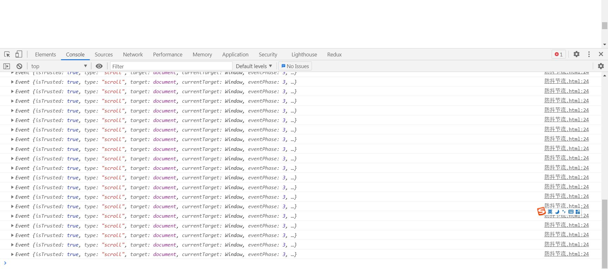
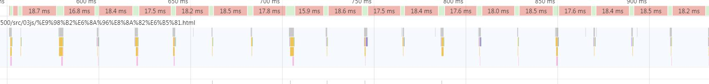

在平时开发的过程中，会有很多场景会频繁触发事件，比如说搜索框的实时发请求，
疯狂点轮播图换图，onmousemove,resize,onscroll等等，有些时候，我们并不能或者不想频繁触发事件，咋办呢？
我们频繁触发滚轮事件,resize事件,回调函数会频繁触发,如果函数中操作DOM就会引起回流

没有操作DOM时候就已经很耗性能了

防抖: 事件相应函数在一段时间后才执行，如果在这段事件内再次调用，则重新计算执行时间；当预定的时间内没有再次调用该函数，则执行dosomething函数
能够解决一部分问题,比如疯狂点击的问题,只会在延迟时间大于指定时间才会执行一次
节流: 如果你持续触发事件，每隔一段时间，只执行一次事件